철도신호기사 (2009-08-30 기출문제)
1과목: 전자공학
1. 검파효율이 90[%]인 직선검파회로에 반송파의 진폭이 10[V]이고 AM 변조도가 50[%]인 피변조파를 인가하는 경우 출력에 나타나는 신호파의 진폭은 몇 [V] 인가?
- 2.5[V]
- 4.5[V]
- 5.2[V]
- 9.5[V]
(정답률: 알수없음)

2. 트랜지스터가 활성영역에서 동작하기 위해서 베이스-컬렉터 접합부에 가해주는 바이어스 전압은?
- 순방향 바이어스 전압을 가한다.
- 역방향 바이어스 전압을 가한다.
- NPN 트랜지스터의 경우에서만 순방향 바이어스 전압을 가한다.
- PNP 트랜지스터의 경우에서만 역방향 바이어스 전압을 가한다.
(정답률: 알수없음)
3. 트랜지스터, 저항 및 콘덴서 등으로 구성된 멀티바이브레이터 회로를 단안정, 무안정, 쌍안정으로 분류하는 기준은?
- 전원 전압이 크기
- 결합한 회로의 구성
- 전원 전류의 크기
- 바이어스 전압의 크기
(정답률: 알수없음)
4. 다음 중 증폭기에서 발생하는 왜곡의 종류가 아닌 것은?
- 위상 왜곡
- 진폭 왜곡
- 혼변조 왜곡
- 평형 왜곡
(정답률: 알수없음)
5. 다음 IC 중에서 소비전력이 가장 작은 것은?
- TTL
- ECL
- DTL
- CMOS
(정답률: 알수없음)
6. 그림과 같은 회로를 콜피츠 발진회로라 할 때 Z1, Z2, Z3 의 리액턴스 성분은?
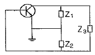
- Z1 : 용량성, Z2 : 유도성, Z3 : 유도성
- Z1 : 유도성, Z2 : 용량성, Z3 : 용량성
- Z1 : 유도성, Z2 : 유도성, Z3 : 용량성
- Z1 : 용량성, Z2 : 용량성, Z3 : 유도성
(정답률: 알수없음)
7. 실리콘 다이오드가 1[㏀]의 저항과 5[V] 전원이 직렬로 연결되었다. 만일 다이오드가 순방향 바이어스 되었다면 저항 1[㏀]의 양단 전압은 몇 [V] 인가? (단, 다이오드의 커인 전압은 0.7[V] 이다.)
- 0.3[V]
- 0.7[V]
- 3.7[V]
- 4.3[V]
(정답률: 알수없음)
8. 300[W]의 반송파 전력을 갖는 AM송신기가 85%의 변조도를 갖는다면, 피변조파의 전력은 약 몇 [W] 인가?
- 346
- 408
- 450
- 521
(정답률: 알수없음)
9. 다음 중 차동증폭기에 대한 설명으로 옳은 것은?
- CMRR이 작을수록 차동증폭기의 성능이 좋다.
- CMRR이 작을수록 차동이득이 증대된다.
- CMRR은 차동이득에 대한 동상이득의 비용이다.
- 이상적인 차동증폭기의 동상이득은 영(zero)이다.
(정답률: 알수없음)
10. PN접합에서 공핍층은 무엇으로 구성되어 있는가?
- 소수 캐리어
- 이온
- 원자
- 다수 캐리어
(정답률: 알수없음)
11. 그림과 같은 회로는 어떤 회로인가?
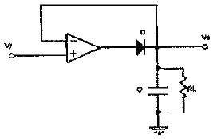
- DC 전압폴로워
- 피크검출기
- 대수증폭기
- 전류-전압 변환기
(정답률: 알수없음)
12. 다음 중 전자의 페르미-디랙 분포 함수식을 나타낸 것은?
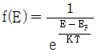
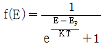
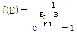
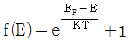
(정답률: 알수없음)
13. 다음 중 클리퍼(clipper)회로에 대한 설명으로 옳은 것은?
- 입력펄스를 증폭시켜 다음 회로에 연결하는 기능을 한다.
- 파형의 상층과 하층을 일정 레벨로 잘라주는 기능을 한다.
- 주로 궤환회로와 연결하여 신호를 안정화하는데 사용한다.
- 파형 복원에 사용하는 회로이다.
(정답률: 알수없음)
14. 다음 중 RC 결합 증폭회로에서 증폭 대역폭을 5배로 하려면 전압증폭 이득을 약 몇 [dB] 감소시켜야 하는가?
- 3[dB]
- 6[dB]
- 11[dB]
- 14[dB]
(정답률: 알수없음)
15. 그림과 같은 회로의 출력은 어떻게 되는가?
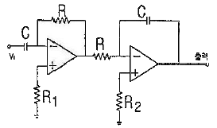
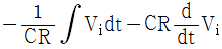
- -2 Vi
- Vi
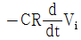
(정답률: 알수없음)
16. 다음 중 발진주파수를 안정화시키는 방법이 아닌 것은?
- 항온조 시설을 한다.
- 정전압 회로를 사용한다.
- 발진회로와 부하사이에 완충 증폭기를 사용한다.
- 부하 변동을 막기 위하여 푸시풀 주파수 체배기를 사용한다.
(정답률: 알수없음)
17. 다음 중 리액턴스 트랜지스터를 이용하는 변조방식은?
- 진폭변조
- 주파수변조
- 펄스변조
- 링변조
(정답률: 알수없음)
18. 다음 중 병렬 저항 이상형 RC 발진회로의 발진 주파수[Hz]를 나타낸 것은?
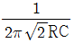
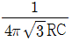
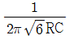
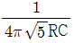
(정답률: 알수없음)
19. 다음 중 전위장벽에 대한 설명으로 옳은 것은?
- 다이오드의 임계파괴 전압이다.
- PN 접합 사이의 전위차이다.
- 다이오드를 동작시키기 위한 최소전압이다.
- 다이오드에 흐르는 전류이다.
(정답률: 알수없음)
20. 그림과 같은 회로의 명칭은 무엇인가?
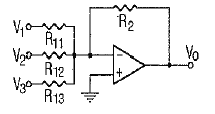
- 가산기
- 미분기
- 적분기
- 반파 정류기
(정답률: 알수없음)
2과목: 회로이론 및 제어공학
21. 시간함수 f(t)=1-e-at의 라플라스 변환은?
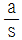
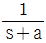
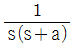
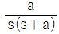
(정답률: 알수없음)
22. R-C 저역 필터회로의 전달함수 G(jω)는? (단, ω = 0 이다.)
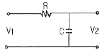
- 0
- 0.5
- 0.707
- 1
(정답률: 알수없음)
23. 다음 회로의 a, b 단자간 임피던스가 R이 되기 위한 조건은?
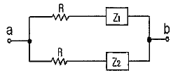
- Z1 Z2 = R
- Z1 Z2 = R2
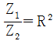
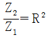
(정답률: 알수없음)
24. 3상 불평형 전압에서 영상전압이 140[V]이고, 정상전압이 600[V], 역상전압이 280[V]이라면 전압의 불평형률은?
- 2.5
- 0.47
- 0.4
- 0.23
(정답률: 알수없음)
25. 저항 R 커패시턴스 C의 병렬회로에서 전원 주파수가 변할 때의 임피던스 궤적은?
- 제1상한 내의 반직선
- 제1상한 내의 반원
- 제4상한 내의 반원
- 제4상한 내의 반직선
(정답률: 알수없음)
26. 다음과 같은 4단자 회로의 4단지 정수 A, B, C, D에서 C 의 값은?
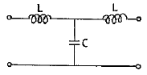
- 1 - jωC
- 1 - ω2LC
- jωL(2 - ω2LC)
- jωC
(정답률: 알수없음)
27. R-L 직렬회로에서 시간 t = 0에서 스위치를 닫아 직류전압을 인가했을 때 전류 i가 0에서 정상 전류의 63.2[%]에 달하는 시간[sec]은? (단, L의 초기전류는 0 이다.)
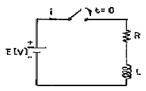
- LR [sec]
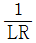
[sec]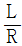
[sec]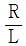
[sec]
(정답률: 알수없음)
28.
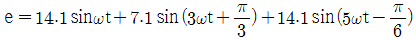
일 때 실효값은 약 몇 [V] 인가?- 10.5[V]
- 15[V]
- 22[V]
- 25.6[V]
(정답률: 알수없음)
29. 어느 회로의 유효전력은 300[W], 무효전력은 400[var]이다. 이 회로의 피상전력은 몇 [VA]인가?
- 350[VA]
- 500[VA]
- 600[VA]
- 700[VA]
(정답률: 알수없음)
30. 선로의 임피던스 Z = R + jωL[Ω], 병렬 어드미턴스가 Y = G+jωC[℧]일 때 선로의 저항 R과 콘덕턴스 G가 동시에 0 이 되었을 때 전파 정수는?
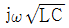
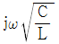
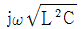
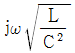
(정답률: 알수없음)
31. 다음과 같이 주어진 상태 방정식에서 특성방정식의 근은?
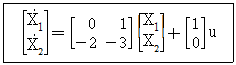
- -1, -2
- -2, -3
- -1, -3
- 1, -3
(정답률: 알수없음)
32.
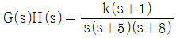
일 때 근궤적에서 점근선의 실수축과의 교차점은?- -6
- -5
- -4
- -1
(정답률: 알수없음)
33. 다음 제어량 중에서 추종제어와 관계없는 것은?
- 위치
- 방위
- 유량
- 자세
(정답률: 알수없음)
34. 그림과 같은 계전기 접점회로의 논리식은?
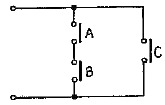
- A+B+C
- (A+B)C
- AB+C
- ABC
(정답률: 알수없음)
35. 어떤 제어계의 출력
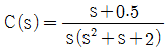
로 주어질 때 정상치는?- 4
- 2
- 0.5
- 0.25
(정답률: 알수없음)
36. 그림과 같은 제어계가 안정되기 위한 K의 범위는?
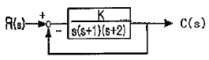
- K ＜ -2
- K ＞ 6
- 0 ＜ K ＜ 6
- K ＞ 6, K ＜ 0
(정답률: 알수없음)
37. 그림과 같은 신호 흐름선도에서 C/R 은?
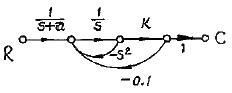
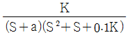
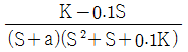
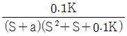
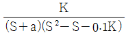
(정답률: 알수없음)
38. 다음 중 f(t) = e-at의 Z변환은?
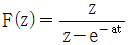
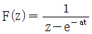
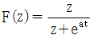
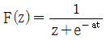
(정답률: 알수없음)
39. 전달함수
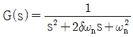
인 제어계에서 ωn = 2, δ = 0일 때 단위 임펄스 입력에 대한 출력은?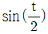
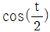
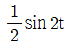
(정답률: 알수없음)
40. 2차계 과도응답의 특성방정식이 s2 + 2δωns + ωn2 = 0 인 경우 s가 서로 다른 2개의 실근을 가졌을 때의 제동은?
- 과제동
- 부족제동
- 임계제동
- 무제동
(정답률: 알수없음)
3과목: 신호기기
41. 3상 유도전공기의 출력이 10kW이고, 슬립이 4.8% 일 때의 2차동손은 약 몇 [kW] 인가?
- 0.3[kW]
- 0.4[kW]
- 0.5[kW]
- 0.6[kW]
(정답률: 알수없음)
42. 50[Hz], 4극 유도전동기의 슬립이 4[%]일 때의 매분 회전수는 몇 [rpm] 인가?
- 1410[rpm]
- 1440[rpm]
- 1470[rpm]
- 1500[rpm]
(정답률: 알수없음)
43. 전동차단기에서 전동기의 슬립전류는 몇 [A] 이하로 하여야 하는가?
- 0.4[A]
- 3.6[A]
- 4.5[A]
- 5.0[A]
(정답률: 알수없음)
44. 신호현시가 열차 또는 차량에 의해 자동적으로 제어되는 것으로 취급자도 조작할 수 있는 신호기는?
- 자동의 신호기
- 반자동의 신호기
- 수동의 신호기
- 자동원격의 신호기
(정답률: 알수없음)
45. 다음 중 유극 계전기의 45° 접점은?
(정답률: 알수없음)
46. 전기 선로전환기 운전 중에 콘덴서 회로가 단선될 경우 전동기의 동작 상태는?
- 정지 후 다시 동작한다.
- 계속 회전한다.
- 선로전환기 동작이 정지된다.
- 회전 방향이 달라진다.
(정답률: 알수없음)
47. 전환쇄정기에 관한 사항이다. 쇄정자는 리버를 속여서 취급하였을 때에도 쇄정간의 홈에 정위, 반위 균등하게 몇 [mm] 이상 삽입하여야 하는가?
- 4[mm]
- 10[mm]
- 15[mm]
- 22[mm]
(정답률: 알수없음)
48. 건널목경보기의 경보 음량은 경보기 1m 전방에서 몇 [dB]정도가 되도록 설치 관리 하여야 하는가?
- 20 ~ 50[dB]
- 60 ~ 130[dB]
- 140 ~ 220[dB]
- 210 ~ 260[dB]
(정답률: 알수없음)
49. 다음 전력용 반도체 소자 중 사이리스터(Thyristor)에 속하지 않는 것은?
- SCR
- diode
- triac
- SUS
(정답률: 알수없음)
50. 다음 계전기 중에서 가장 널리 사용되는 일반적인 직류 계전기로서 보통 복수의 정위(N) 접점과 반위(R) 접점을 갖는 계전기는?
- 선조 계전기
- 완동 계전기
- 완방 계전기
- 시소계전기
(정답률: 알수없음)
51. 용량 5kW, 1차 3300V, 2차 1⑤V의 변압기에 전부하를 걸어줄 때, 효율이 96.2%이라면 이 변압기의 1차 입력은 약 몇 [kW]인가?
- 4.4[kW]
- 5.2[kW]
- 5.4[kW]
- 5.8[kW]
(정답률: 알수없음)
52. 직류전동기의 제동법 중 전동기를 발전기롤 동작시켜 회전부가 갖는 기계적 에너지를 전기적 에너지로 변환하여 열로 소비하는 제동방식은?
- 발전제동
- 회생제동
- 저항제동
- 맴돌이 전류제동
(정답률: 알수없음)
53. 직류 분권 전동기의 전압이 일정할 때 부하 토크가 2배이면 부하전류는?
- √2배로 된다.
- 2배로 된다.
- 1/2배로 된다.
- 1/4로 된다.
(정답률: 알수없음)
54. 다음 중 현재 국내에서 사용 중인 교류 NS형 전기 선로전환기의 특징에 관한 설명으로 옳지 않은 것은?
- 교류용의 전동기는 보수노력을 덜기 위하여 특수한 콘덴서 기동전동기를 사용하며 과거 사용하던 전동기의 브러시 보수는 필요로 하지 않는다.
- 수동핸들에 의하여 수동전환을 할 때 취급자가 기계적인 쇄정을 쉽게 알 수 있도록 수동완료 표시장치가 있다.
- 쇄정 간과 쇄정면은 상하 중첩식으로 하고 보수점검이 쉽다.
- 고속회전축에는 개방형의 볼베어링을 사용하고 있다.
(정답률: 알수없음)
55. 다음 중 변압기의 내부고장 보호에 쓰이는 계전기로 가장 알맞은 것은?
- O.C.R
- 역상계전기
- 접지계전기
- 부흐홀쯔계전기
(정답률: 알수없음)
56. 다음 중 전동차단기의 설치관리에 관한 사항으로 옳지 않은 것은?
- 정지할 때에는 차단봉에 충격을 주지 않게 회로제어기를 조정한다.
- 전동기의 클러치 조정은 차단봉 교체시 시행한다.
- 윤활유는 기아의 중간부분까지 닿을 정도로 유지한다.
- 차단봉은 전원이 없을 때는 자체무게에 의하여 하강하여 수직을 유지하도록 한다.
(정답률: 알수없음)
57. 다음 중 전력용 변압기에 적용되는 냉각방식으로 포함되지 않는 것은?
- 공랭식
- 유입 송유식
- 유입 자냉식
- 유입 풍냉식
(정답률: 알수없음)
58. 반파정류회로에서 직류전압 100V를 얻는데 필요한 변압기 2차 상전압은 약 몇 [V] 인가? (단, 부하는 순저항 부하이며, 변압기내의 전압강하는 무시하고, 정류기내의 전압강하는 15V로 한다.)
- 125[V]
- 256[V]
- 315[V]
- 496[V]
(정답률: 알수없음)
59. 60Hz의 변압기에 50Hz의 동일 전압을 가했을 때의 자속밀도는 60Hz 때의 몇 배인가?
- 5/6
- 6/5
- (5/6)1.6
- (6/5)2
(정답률: 알수없음)
60. 다음 중 3상 권선형 유도전동기의 기동법에 속하는 것은?
- 전전압기동법
- Y-△기동법
- 2차 저항 기동법
- 리액터기동법
(정답률: 알수없음)
4과목: 신호공학
61. 축전지 충전시 전해액의 적정온도는?
- 20 ~ 25℃
- 25 ~ 30℃
- 30 ~ 35℃
- 35 ~ 40℃
(정답률: 알수없음)
62. 선로전환기를 전환할 경우에만 여자하고 평상시에는 무여자 상태가 되어 선로전환기를 쇄정하는 계전기는?
- 전철쇄정계전기
- 전철표시계전기
- 전철제어계전기
- 전철표시반응계전기
(정답률: 알수없음)
63. 열차 최고속도가 150km/h로 운행하는 선구에 건널목 경보시간을 30초로 할 때 적정한 경보제어거리는?
- 850m
- 1000m
- 1250m
- 1450m
(정답률: 알수없음)
64. 궤도회로의 사구간에 대한 설명으로 옳지 않은 것은?
- 사구간의 길이가 7m를 넘지 않도록 해야 하며 7m가 넘는 곳에서는 사구간 보완회로를 구성한다.
- 사구간이 1210mm 이상인 경우 사구간 상호 또는 다른 궤도회로와는 10m 이상 이격하여야 한다.
- 역구내 분기부는 짧은 차량 운행에 의한 부정동작이 될 수 있어 사구간 길이를 3m 미만으로 한다.
- 부정동작 우려가 있을 경우 시소계전기로 완방시간 2초 정도를 삽입하여 궤도계전기를 늦게 낙하시킬 필요가 있다.
(정답률: 알수없음)
65. 열차자동운전장치(ATO)의 기능으로 옳지 않은 것은?
- 정속도 운전 제어
- 정위치 정지 제어
- 자동 수송수요 판단
- 출입문 자동 개폐 제어
(정답률: 알수없음)
66. 다음 도식기호의 명칭은?
- 원방 신호기
- 입환 신호기
- 폐색 신호기
- 중계 신호기
(정답률: 알수없음)
67. 역구내 입환 또는 후속열차 취급을 원활히 하기 위하여 열차가 일정구간을 통과하였을 경우 순차적으로 그 구간내의 선로전환기, 궤도회로를 해정하는 것은?
- 철사쇄정
- 접근쇄정
- 폐로쇄정
- 진로구분쇄정
(정답률: 알수없음)
68. 고속철도 UM71 궤도회로의 송신기나 수신기 사이의 임피던스 정합에 사용되며 주파수와는 무관한 설비는?
- 보상용 콘덴서
- 동조 유니트(tuning unit)
- 정합 변성기(matching unit)
- 공심유도자(air core inductor)
(정답률: 알수없음)
69. 다음 중 열차종합제어장치(TTC)의 데이터 전송장치 운용방식이 아닌 것은?
- CTC 방식
- TWC 방식
- TTC 방식
- Local 방식
(정답률: 알수없음)
70. 최고속도 160 km/h로 운행하는 여객열차 운행구간에서 점제어식 ATS 지상자는 신호기에서 약 몇 m 전방에 설치하여야 하는가?
- 1100
- 1448
- 1962
- 2634
(정답률: 알수없음)
71. 다음 중 열차집중제어장치(CTC)의 장점에 해당되지 않는 것은?
- 보안도 향상
- 고장구간 축소
- 선로용량 증가
- 운전 능률 향상
(정답률: 알수없음)
72. 차상 선로전환기가 배향으로 개통되어 있을 때 표시등의 상태를 바르게 나타낸 것은?
- 소등
- 청색등 점등
- 적색등 점멸
- 등황색등 점등
(정답률: 알수없음)
73. 상치 신호기를 사용목적에 따라 주신호기, 종속신호기, 신호 부속기로 분류할 때 다음 중 주신호기에 해당되는 것은?
- 중계신호기
- 통과신호기
- 원방신호기
- 엄호신호기
(정답률: 알수없음)
74. 철도신호보안장치의 사고를 방지하기 위해 안전측 동작(Fail-safe)의 원칙을 적용하고 있는데, 이에 해당하지 않는 것은?
- 폐전로 방식으로 회로를 구성
- 회로의 조건을 한선에 넣어 제어회로 구성
- 제어접점이 낙하하면 전원을 차단함과 동시에 계전기의 양단을 단락하도록 구성
- 교류 궤도계전기는 정해진 위상 이외의 미류에 대해 오동작되지 않도록 위상제어방식으로 구성
(정답률: 알수없음)
75. 우리나라 고속철도의 안전설비 중 보수자를 보호하기 위한 장치는?
- 끌림검지장치
- 터널경보장치
- 축소검지장치
- 지장물검지장치
(정답률: 알수없음)
76. 그림과 같이 궤도회로의 극성을 전압계로 측정하였더니 E1 보다 E2 가 전압이 높았다. 인접 궤도회로의 극성은 무엇인가?
- 동극성
- 이극성
- 무극성
- 정극성
(정답률: 알수없음)
77. 건널목 전동차단기에 대한 설명 중 옳지 않은 것은?
- 제어 전압은 정격값의 0.9 ~ 1.2배로 설정한다.
- 궤도 중심에서 차단간까지 3.8m 가 되도록 설치한다.
- 차단봉 하강시간은 8초±2초가 되도록 설정한다.
- 차단봉 상승시간은 12초 이하가 되도록 설정한다.
(정답률: 알수없음)
78. 단선구간의 선로용량에 관하여 표현한 식으로 옳은 것은? (단, N은 역 사이의 선로용량, T는 역 사이의 평균열차 운행시간[분], C는 폐색취급시간[분], f는 선로이용률이다.)
(정답률: 알수없음)
79. 다음 중 정거장 외에서 신호기와 궤조절연의 설치위치로 적절한 것은?
- 신호기 내방 2m 이내, 외방 6m 이내
- 신호기 내방 2m 이내, 외방 12m 이내
- 신호기 내방 12m 이내, 외방 6m 이내
- 신호기 내방 12m 이내, 외방 2m 이내
(정답률: 알수없음)
80. 궤도회로 유류는 계전기 낙하전압 또는 전류의 몇 % 이하로 하도록 규정하고 있는가?
- 10
- 20
- 30
- 40
(정답률: 알수없음)
검파회로에서는 반송파의 진폭과 피변조파의 진폭을 곱한 값이 출력에 나타나는데, 여기서 반송파의 진폭은 10[V]이다.
따라서, 출력에 나타나는 신호파의 진폭은 10[V] x 5[%] x 90[%] = 4.5[V] 이다.
정답은 "4.5[V]" 이다.